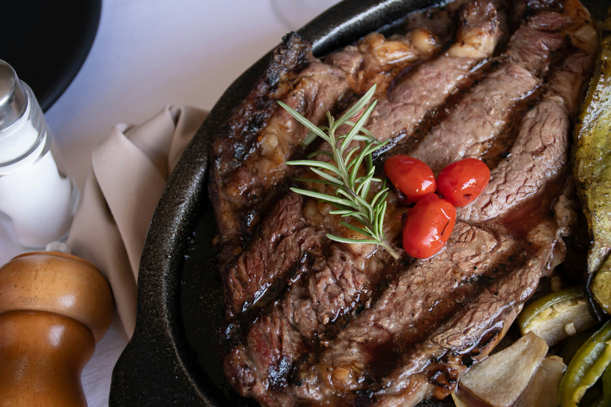

Here are some recipes I've enjoyed over the years!
Chocolate Chip Cookies

Recipe Ingredients:
- Unsalted butter
- Granulated Sugar
- Packed light or dark brown sugar
- Large egg
- Pure vanilla extract
- Semi-sweet chocolate chunks (melted)
- All-purpose flour
- Natural unsweetened cocoa powder
- Baking soda
- Salt
- Semi-sweet chocolate chunks
Once you've gathered the ingredients, it's time to start baking!

Recipe Steps
- In a mixing bowl cream together the butter, granulated sugar, and brown sugar
- Add the egg and vanilla extract and beat well
- Add the melted chocolate
- In a separate bowl combine the flour, baking soda, cocoa powder and salt
- Combine the wet and dry ingredients
- Add the unmelted chocolate chunks.
- Form 15 cookies and place on a baking sheet.
- Cook for 12 to 13 minutes at 350 degrees.
- Let them cool, then dig in!
These chocolate chip cookies are super sweet! Adding some salt may help balance out the sweetness, for those of you who may like a more subtle taste. I'd recommend these chocolate chip cookies to anyone who wants to make a simple gift to give to others during the holidays!
Sundried Tomatoes

Recipe Ingredients:
- Fresh Tomatoes
- Sea Salt
- Olive Oil
Once you have these three things, you're ready to go!
Recipe Steps
- Cut the tomatoes in half lengthwise
- Spread them out cut-side-up on parchment paper/baking sheet
- Season with salt
- Slow cook in the oven for 2 to 3 hours, at 250 degrees
- Remove from the oven, and start munching!
As the taste of the tomatoes will be intensified due to the drying process, I recommend going really light on the salt! Your dried tomatoes can be stored and used in all kinds of ways. My personal favorites is to keep them in a jar of olive oil. That makes it super easy to add it to dishes like salads and pasta!
Pan-Seared Ribeye Steak
Recipe Ingredients:
- Ribeye Steaks
- Garlic
- Olive Oil
- Butter
- Rosemary
- Salt
- Pepper
Let's get started!
Recipe Steps
- Season your steaks with salt and pepper approximately 30 minutes before cooking
- Heat up your pan with medium-high heat
- Add your oil, and let it heat until shimmery
- Add the steaks to your pan and sear each side for 3 to 4 minutes
- Turn the heat down to medium, and add your garlic, rosemary, and butter to the pan
- Carefully spoon the butter and oil over your steak for an extra 1 to 2 minutes per side
- Remove the steaks from the heat, and let them rest for about 5 to 10 minutes
- Slice and serve!
Resting the steaks helps with retaining the steak's moisture and juices, as well as distributing heat to the inside. For those of your who like your steak well done, simply keep it on the pan for an extra 2 to 3 minutes per side on medium heat. This recipe is typically meant for a medium rare finish.